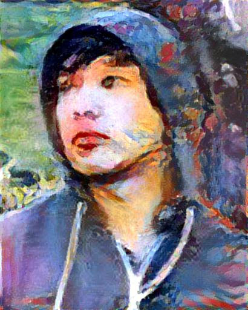

|
|
 |
Hieu Le
Ph.D. candidate
Computer Vision Group
Computer Science Department
Stony Brook University - SUNY
Google Scholar LinkedIn
|
About me
I am a fourth-year Computer Science Ph.D. student at Stony Brook University. I have been working on multiple computer vision problems such as image and video segmentation, 3D model registration, and object localization. I am particularly interested in deep learning and probabilistic models.
Contact
Computer Science Building #\(138\)
Stony Brook University
Nicolls Rd, Stony Brook, 11790, U.S.A.
E-mail: \(\text{hle}\) \(\text{@}\) \(\text{cs.stonybrook.edu}\)
Education
Ph.D. Computer Science, Stony Brook University, New York, USA, 2014-now.
B.Sc. Computer Science, Ho Chi Minh City - University of Science, Vietnam, 2008-2012.
Professional Activities
Student member of VSS - Vision Sciences Society.
Vietnam Education Foundation Fellow - Cohort 2014.
News
[Jun-2018] Two papers accepted at ECCV2018, i.e, ADNet for shadow detection and Iteractive Crowd Counting. Big thanks and congratz to all my co-authors.
[Dec-2017] Our latest work on shadow detection is avaialble on arxiv.
[Sep-2017] Our paper on object co-localization has been accepted at ICCV 2017, Workshop on CEFRL, Venice Italy
[Sep-2017] I was at AIG science last summer. Special thanks to Ashwash, Kaigang, Liang Kai, Alvin, Nan, Li, Vidit, Abhinav, Alice, Stephen, Mark, Shawn.
[May-2017] Our poster on object co-localization will be presented at VSS 2017 (Florida - US). [poster]
[Feb-2017] This semester I will do TA for: CSE 547: Discrete Math
[Sep-2016] This semester I will do TA for: CSE 528: Computer Graphics & CSE 214: Computer Science II
[Sep-2016] Our paper has been accepted at ACCV 2016.
|